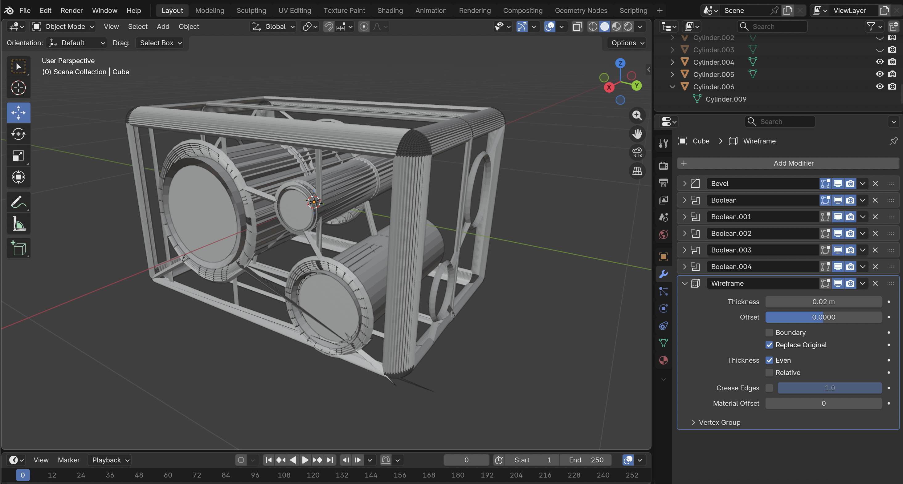
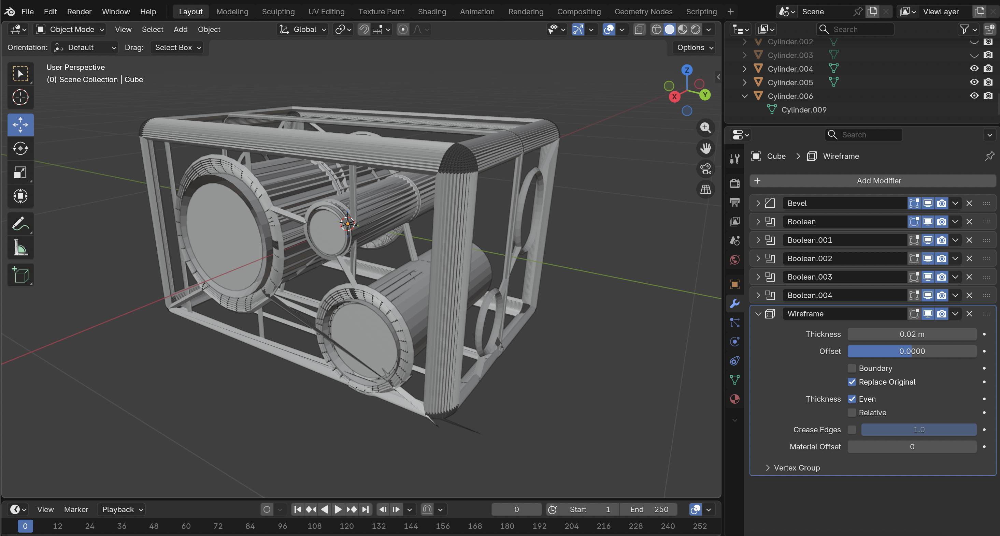

An Unknown Gaze
A speculative object in a future of quiet and unaccountable machines
Machines are slowly becoming part of our environment. They observe and collect data, but we often do not know who controls them. An unknown gaze becomes normal in everyday life.
Future Framing
I started with a simple 2D matrix. The axes are visible / invisible and controlled / neglected. This helped me think about different futures in four segments.

Selected Future
I selected a plausible future from the invisible and neglected quadrant. I see this as a plausible future. It is not extreme science fiction. It is already starting to happen around us. Many ambient sensors already exist in cities and public spaces. We do not always know who operates them or how they use the data. Because of this, the future feels realistic and close to the present.
Mood Board
This image represents the atmosphere of the selected future. The machines are not dramatic or violent. They are quiet, neutral, and part of the background. Their presence feels normal, but slightly uncomfortable. The presence is quiet but constant.
Speculative Object
The object represents an ambient sensor in this near future. It does not clearly show what it does. It feels present, but not fully understandable. The form is simple and neutral. Lenses suggest observation. The goal was to create something quiet but slightly unsettling.
Form & Process
I created several rough drafts in Blender. I focused more on presence and shape than realism. I wanted the object to feel integrated into space, not like a robot.


 


Reflection
This project made me think about how invisible systems become normal. When something is always present but not explained, it changes how we feel in a space. The unknown gaze is not loud or dramatic. It is quiet, constant, and part of everyday life.